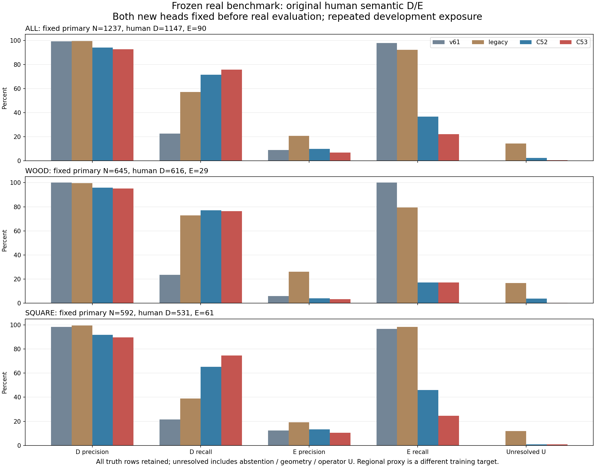
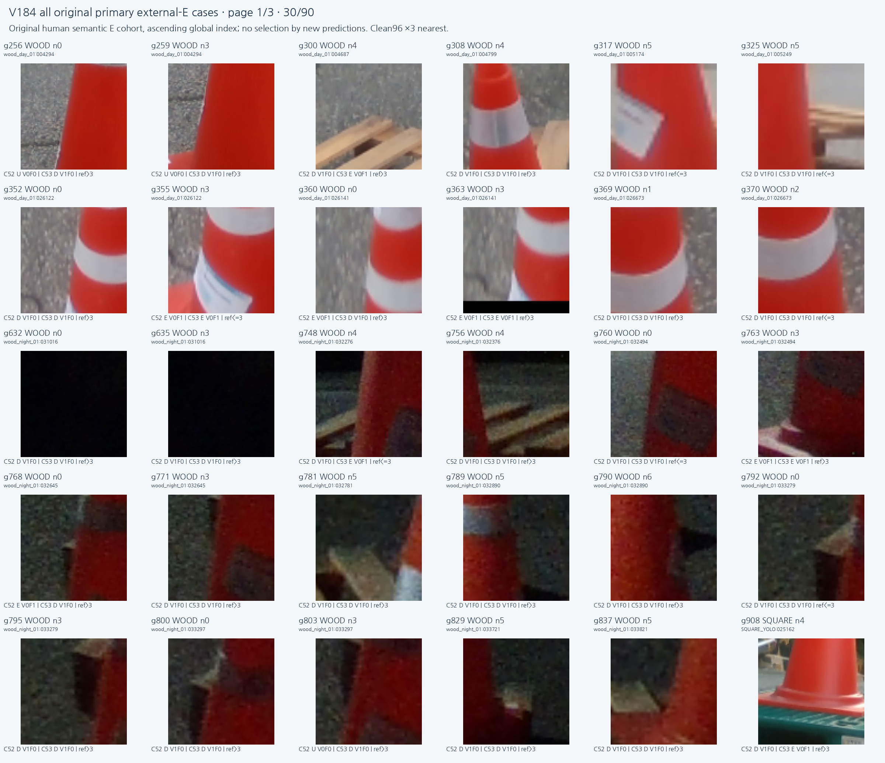
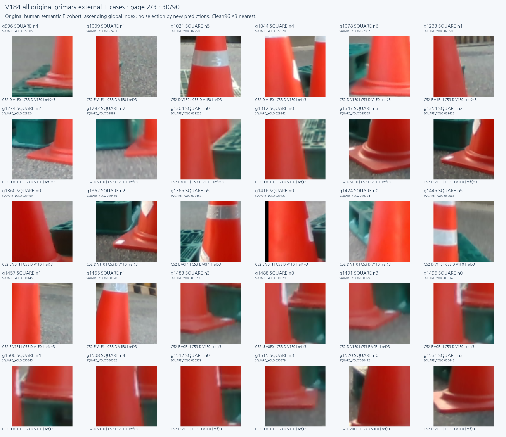
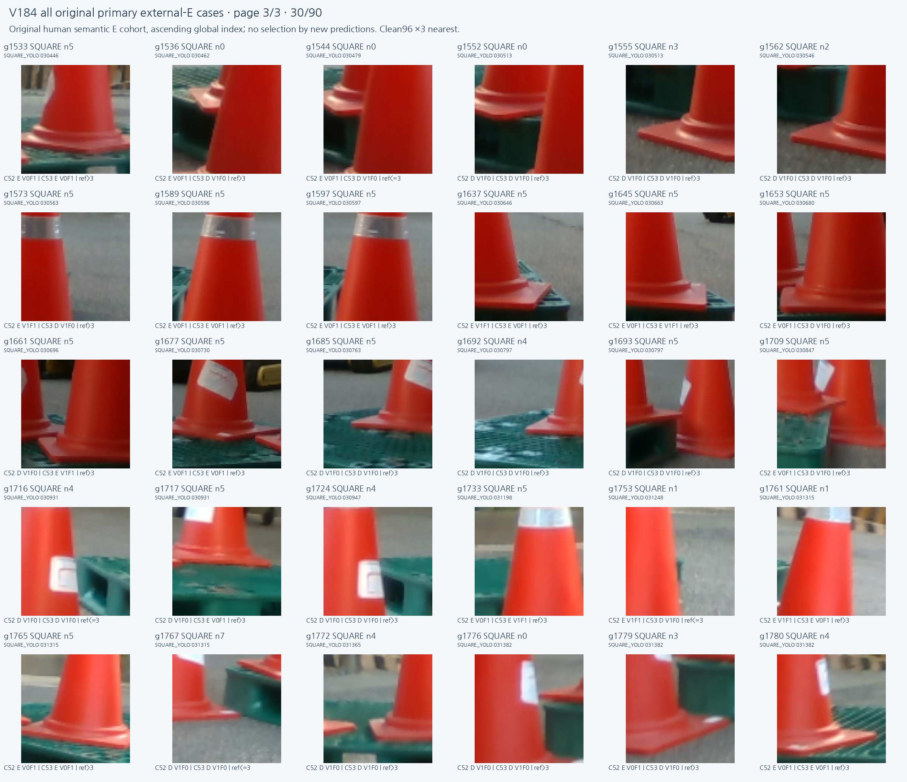

새 RGB 모델(C52)과 RGB+SAM 모델(C53)을 모두 고정한 뒤 같은 실사 입력에서 평가했습니다. 보이는 점 recall은 높아졌지만 실제 외부 가림을 보인다고 통과시키는 오류가 늘었습니다. 전체 성능 개선이나 목표 해결로 판단하지 않으며 어느 모델도 채택하지 않았습니다.
D=보임, E=외부 가림, U=보류입니다. 주 평가 분모는 D 1,147개·E 90개이며, 혼동행렬의 행은 정답 D/E, 열은 예측 D/E/U입니다. 원래 보류·geometry S·미해결 응답은 U로 합산하되 상세 CSV에서는 구분했습니다. 집계는 목재·정사각형의 실제 count를 합했으며 비율을 단순 평균하지 않았습니다.
| 모델 | D precision | D recall | E precision | E recall | U 비율 | CM D/E → D/E/U |
|---|---|---|---|---|---|---|
| v61 | 99.24% | 22.67% | 9.03% | 97.78% | 0.00% | [[260, 887, 0], [2, 88, 0]] |
| 기존 실사 학습 모델 | 99.54% | 57.11% | 20.65% | 92.22% | 14.31% | [[655, 319, 173], [3, 83, 4]] |
| 새 RGB | 94.04% | 71.58% | 9.85% | 36.67% | 2.34% | [[821, 302, 24], [52, 33, 5]] |
| 새 RGB+SAM | 92.54% | 75.68% | 6.83% | 22.22% | 0.49% | [[868, 273, 6], [70, 20, 0]] |
기존 모델은 외부 가림 90개 중 83개를 E로 맞혔고 3개를 D로, 4개를 U로 냈습니다. 새 RGB는 33개를 E로 맞히고 52개를 D·5개를 U로 냈습니다. 새 RGB+SAM은 20개를 E로 맞히고 70개를 D로 냈습니다. 보임 recall 상승만으로 가림 판단이 좋아졌다고 말할 수 없습니다. v61도 보임을 대량 배제해 E recall만 높은 특성이 있어 함께 봐야 합니다.
전체 등록은 목재 105장·정사각형 118장입니다. 고정 주 평가에는 목재 D616/E29와 정사각형 D531/E61이 포함됩니다. 주 평가에 해당하는 정사각형 프레임은 117장이며 원 118장을 삭제한 것이 아닙니다. 전체 1,784슬롯은 별도 inventory에 유지했습니다.
| 자료 | 모델 | D/E 정답수 | D recall | E precision | E recall | U 비율 | E를 D로 오분류 |
|---|---|---|---|---|---|---|---|
| WOOD_PRIMARY105 | v61 | 616/29 | 23.54% | 5.80% | 100.00% | 0.00% | 0 |
| WOOD_PRIMARY105 | 기존 실사 학습 모델 | 616/29 | 72.73% | 26.14% | 79.31% | 16.59% | 2 |
| WOOD_PRIMARY105 | 새 RGB | 616/29 | 77.11% | 4.00% | 17.24% | 3.72% | 21 |
| WOOD_PRIMARY105 | 새 RGB+SAM | 616/29 | 76.46% | 3.36% | 17.24% | 0.16% | 24 |
| SQUARE118 | v61 | 531/61 | 21.66% | 12.42% | 96.72% | 0.00% | 2 |
| SQUARE118 | 기존 실사 학습 모델 | 531/61 | 38.98% | 19.11% | 98.36% | 11.82% | 1 |
| SQUARE118 | 새 RGB | 531/61 | 65.16% | 13.33% | 45.90% | 0.84% | 31 |
| SQUARE118 | 새 RGB+SAM | 531/61 | 74.76% | 10.42% | 24.59% | 0.84% | 46 |
기존 수동 클릭 기준 오차 3px 이하의 보이는 점 376개 진단입니다. 이것은 이미 정해진 reference 연관 분석이며 새 좌표 정답이나 모델 입력이 아닙니다. 주 평가를 위치 오차·owner·품질로 걸러 유리하게 만들지 않았습니다.
| 모델 | 보이는 점 수 | D로 회수 | D recall | E로 오분류 | U |
|---|---|---|---|---|---|
| v61 | 376 | 85 | 22.61% | 291 | 0 |
| 기존 실사 학습 모델 | 376 | 205 | 54.52% | 108 | 63 |
| 새 RGB | 376 | 260 | 69.15% | 111 | 5 |
| 새 RGB+SAM | 376 | 272 | 72.34% | 100 | 4 |
사람 주석 SELF 136개는 외부 가림 주 평가에 넣지 않고 기존 self 응답 표로 보존했습니다. 두 새 모델은 SELF 분류기가 아니며 사용자의 upstream 기하 필터와 구분합니다. 키포인트를 이동하거나 PnP를 수행하지 않았습니다.
공개 자료는 사람 native 가시성 gold가 아닌, 이전에 동결한 중심2×2의 TARGET/FOREIGN/BACKGROUND 약한 관측입니다. known 204개(T24/F96/BG84), UNKNOWN 156개를 유지했습니다. 이 표에서 C52/C53은 부가 owner argmax를 T/nonT로 비교하며, 위 사람 D/E 표의 regional support decoder와 서로 다른 출력입니다. crop 안에 팔레트가 보이는지와 중심 픽셀 소속도 구분합니다.
| 모델 | known CM T/nonT → T/nonT/U | T precision | T recall | 전체 예측 U | known | 정답 UNKNOWN |
|---|---|---|---|---|---|---|
| v61 | [[7, 17, 0], [16, 164, 0]] | 30.43% | 29.17% | 109 | 204 | 156 |
| 새 RGB | [[17, 7, 0], [26, 154, 0]] | 39.53% | 70.83% | 108 | 204 | 156 |
| 새 RGB+SAM | [[16, 8, 0], [14, 166, 0]] | 53.33% | 66.67% | 108 | 204 | 156 |
원 입력 U는 108개, v61 자체 U는 109개입니다. 공개 held의 기존 가림 모델 저장 출력은 조사한 계보에서 찾지 못해 missing으로 표시하며 다른 자료로 대체하거나 새 추론하지 않았습니다. 공개 약한 관측의 개선을 native 외부 가림 성능으로 승격하지 않습니다.
기존에 고른 19개 사례는 원 순서를 유지했습니다. 외부 가림 그림은 고정 주 평가 E 90개 전체를 원 global index 순서로 보여줍니다. 예측이 맞거나 틀린 경우만 고르지 않았습니다. 원 RGB96 픽셀을 그대로 사용하고 숫자·주석은 바깥에 표시합니다. 전체 문맥이 부족한 crop만으로 물체 소속이나 실패의 인과 원인을 확정하지 않습니다.




앞선 source TRAIN 유래 고정 401개 진단에서 작은 crop 변화 뒤 정답이 오답으로 뒤집히는 경우는 이전 각 11개에서 새 RGB 4개·RGB+SAM 3개로 줄었습니다. 이는 source 조건의 안정성 개선이며 독립 실사 성공을 뜻하지 않습니다. 이번 실사에서는 보임 회수와 외부 가림 배제를 동시에 개선하지 못했습니다.
학습 자료 70,832행만 별도로 감사한 결과, 공개 실사·CF는 중심이 대상/다른 물체/배경인지에 대한 owner 학습에만 쓰였고 두 부위 support 정답은 전부 UNKNOWN이었습니다. 합성의 support는 전체 96 crop에 투영된 등록 끝부위의 보임/앞가림 존재이며 둘 다 YES일 수 있습니다. 중심 소속, crop 안 대상 부위 존재, 사람 native 가시성은 서로 다른 질문입니다. 이 정의와 직접 감독의 차이는 확인됐지만 실사 실패의 인과 원인이 확정된 것은 아닙니다.
실제 그림에서도 콘과 팔레트 일부가 함께 보이고 새 모델이 D를 내는 구도가 반복됩니다. 고정 g256의 C53 응답은 부가 owner가 다른 물체(F)지만 부위 support는 보임만 YES입니다. crop 그림과 출력의 불일치는 관찰됐으나 이를 근거로 owner F를 외부 가림 정답으로 바꾸거나 decoder를 고치지 않았습니다. 다음 진단의 핵심은 학습용 공개 자료에서 사용자 목표와 같은 부위별 가림 질문을 직접 감독할 근거가 있는지 확인하는 것입니다. SAM 추가만으로 해결됐다는 증거는 없습니다.
합성·공개 TRAIN으로 학습한 최종 8,000회 가중치 두 개를 모두 사용했습니다. 이번 실사 결과 전에 모델·decoder·평가 조건을 고정했고 결과로 문턱·모델·학습 자료·구조를 선택하지 않았습니다. 원 RGB/valid 바이트, F64 q/L·native·보류, SAM 보간, 4,288개 출력 처리는 저장 감사로 확인했습니다. SAM은 초기 q8 박스만 사용한 동결 모델입니다.
현재 223장과 공개 held 45장은 이전에도 검토·평가한 자료라 fresh blind 평가라고 부르지 않습니다. 기존 가림 모델의 역사적 real-CAL 노출도 보존했습니다. 이번 C52/C53 학습·보정·문턱 선택에는 현재 자료를 쓰지 않았고 새 주석·GT 중심 crop·초기 좌표 교정·PnP는 없습니다. 자연 실사에서 보임과 외부 가림을 함께 안정적으로 판단하는 전체 목표는 아직 미해결입니다.
집계 JSON · 사람 주석 전체 confusion·self·오차별 지표 · 공개 weak owner 전체 지표